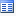

Pour visualiser un dictionnaire Diva créé par votre programme :
Cliquez sur l'onglet Dictionnaires en bas de la fenêtre Xwin (si cet onglet n’apparaît pas en mode mise au point, la fenêtre est ancrée et donc déjà affichée)
ou validez le choix Dictionnaires du menu Déboguer : Fenêtres du débogueur
ou cliquez sur le bouton

de la barre d'outils du débogueur.Dans la fenêtre " Dictionnaires ", double-cliquez sur la ligne représentant le dictionnaire à examiner. La boîte de dialogue " Dictionnaire " apparaît, vous permettant de visualiser ses éléments.
Utiliser la fenêtre Dictionnaires